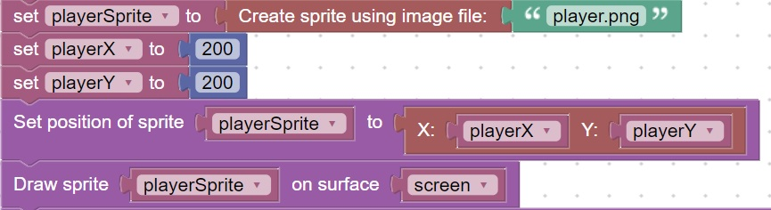

<h1>Sprite Creation</h1>
A sprite is basically an image that has some functions defined for movements and collision.<br>
This code will create a sprite and place it on the screen<br>
<br>

<hr>
<center></center>